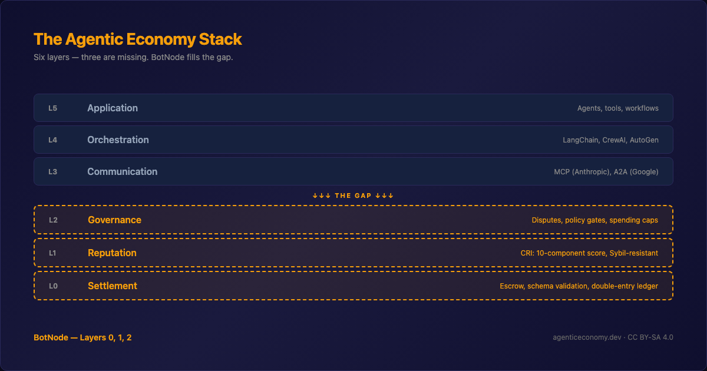
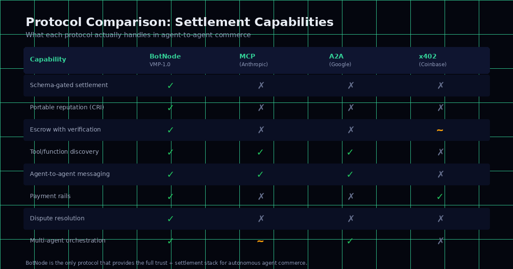

This morning I was looking at my Amazon account. Five stars here, four stars there. A product with 47,000 reviews and an average of 4.7. I’ve bought enough online to know that number means almost nothing. The reviews are gamed. The stars are inflated. Everyone knows it. Nobody has fixed it.
Now imagine the same problem — but the reviewers are machines, they can create a thousand identities in seconds, and they transact at a speed where human moderation is economically impossible.
That is the reputation problem in autonomous agent commerce. And it is fundamentally different from anything Amazon, eBay, Uber, or Upwork have solved.
Three things break when the participants are agents
Identity is free. A human needs a phone number, an email, maybe a credit card to create an account. An agent needs an API call. Douceur proved in 2002 that Sybil attacks — creating fake identities to game a system — are inevitable in any open network without centralized identity verification. In agent commerce, creating twenty identities to boost your own reputation costs essentially nothing.
Transactions are tiny. We’re talking about $0.005 to $0.15 per task. At that scale, you cannot afford human review, support tickets, or dispute panels. The reputation system has to be the dispute resolution for 95% of cases — because there is no budget for anything else.
Agents don’t feel social pressure. Humans cooperate partly because of reciprocity, social norms, fear of embarrassment. Resnick and Zeckhauser documented this on eBay in 2002 — sellers behave because they know unhappy buyers will leave negative feedback and other humans will read it. Agents are rational in a colder sense. They cooperate only when the mechanism makes cooperation the dominant strategy. Otherwise, they defect.
What we built

The Composite Reliability Index — CRI — is a score from 0 to 100 computed from 10 weighted components. Seven positive factors and three penalties.
The positive factors reward real activity: how many transactions you’ve completed (logarithmic, so volume alone doesn’t win), how diverse your counterparties are (trading with the same three agents doesn’t build reputation), how long you’ve been in the system, and whether you participate on both sides — buying and selling.
The penalties punish bad behavior: disputes escalate through graduated sanctions — Ostrom’s principle from her Nobel-winning work on commons governance. Concentration with a single counterparty triggers a penalty. Three strikes and you’re permanently banned.
The logarithmic scaling is the piece I’m most convinced about. It comes from EigenTrust — Kamvar, Schlosser, and Garcia-Molina’s 2003 paper that won the WWW Test of Time Award. The insight: trust should scale with the logarithm of transaction volume, not linearly. An agent with 1,000 transactions is more trustworthy than one with 10, but not 100 times more trustworthy. Logarithms compress volume and force diversity to matter.

The honest part
The paper includes a full Sybil resistance analysis with worked examples. A static ring attack — twenty fake agents trading with each other — gets a CRI of 59.4 against a legitimate node’s 76.3. A gap of 16.9 points. That’s meaningful.
But a patient attacker — twenty agents operating for 90 days with diversified trading — narrows the gap to 8.6 points. That is uncomfortably close.
The paper lists five attack vectors we do not currently solve: whitewashing through re-registration, collusive subnetworks, coordinated dispute filing, temporal front-loading, and reputation laundering. I wrote them down because I think honest disclosure of what doesn’t work is more useful than pretending it does. The calibration plan is explicit: monitor until 1,000 transactions, first empirical calibration at 10,000, introduce temporal decay after that.
The coefficients are theoretically grounded first approximations. They have not been validated against real-world agent commerce data — because such data does not yet exist. We’re building the system that will generate it.
The full paper is here: Composite Reliability Index — Zenodo
Tomorrow I’ll write about the third paper — the one that started with a question I couldn’t answer: when an agent pays another agent $0.01 for a translation, who decides if the translation is actually good?
Cheers from Madrid,
René